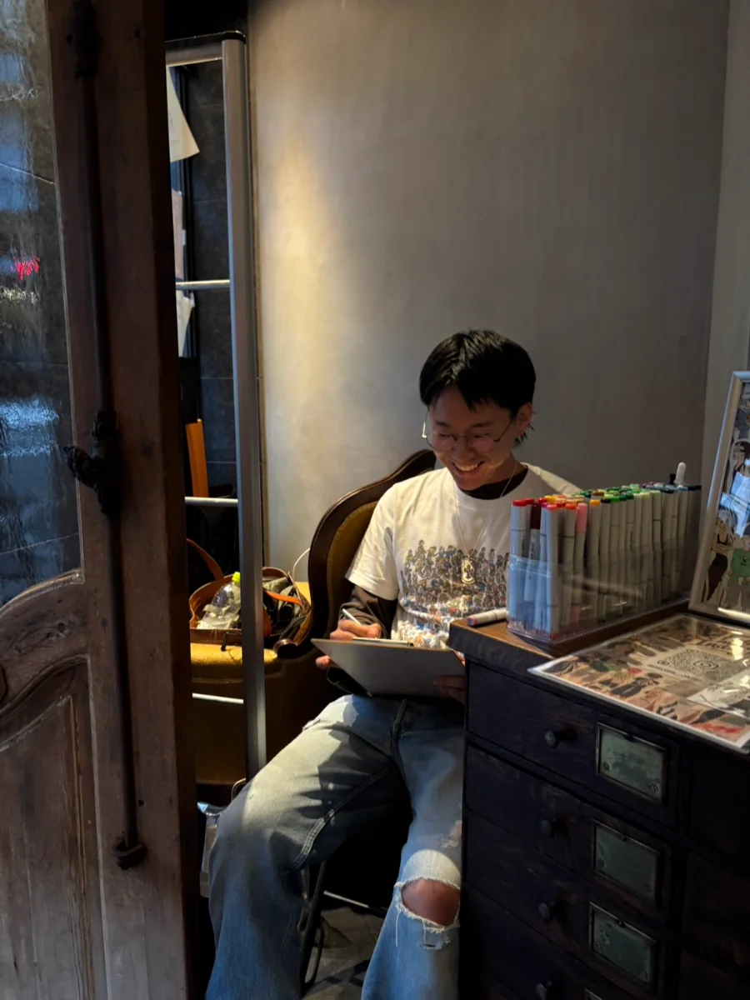

OSUSHI JAPAN ART / NAOTO OTAKA兵庫県加古郡
案Bナオトさんの言う「箇条書きと代官山の写真だけ」で組んだ場合のイメージです。今のABOUTはそのまま残してあります。
ABOUT大高成について

イラストレーター。ファッションを中心に、手描きならではのラフな線や色彩を生かしたイラストを制作しています。
人物の装いや日常の何気ない瞬間を独自の視点で切り取り、ファッションやライフスタイルにまつわる表現を展開しています。綺麗に整えすぎず、線や質感はそのまま残しています。
この先の予定は、決まったぶんから足していきます。
用途や時期が決まっていない段階でも大丈夫です。まずは描きたいものを聞かせてください。
お問い合わせへ